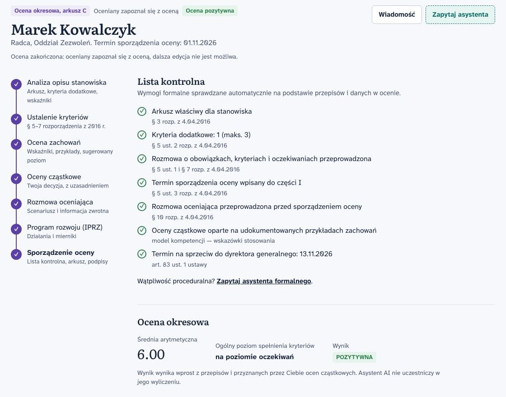
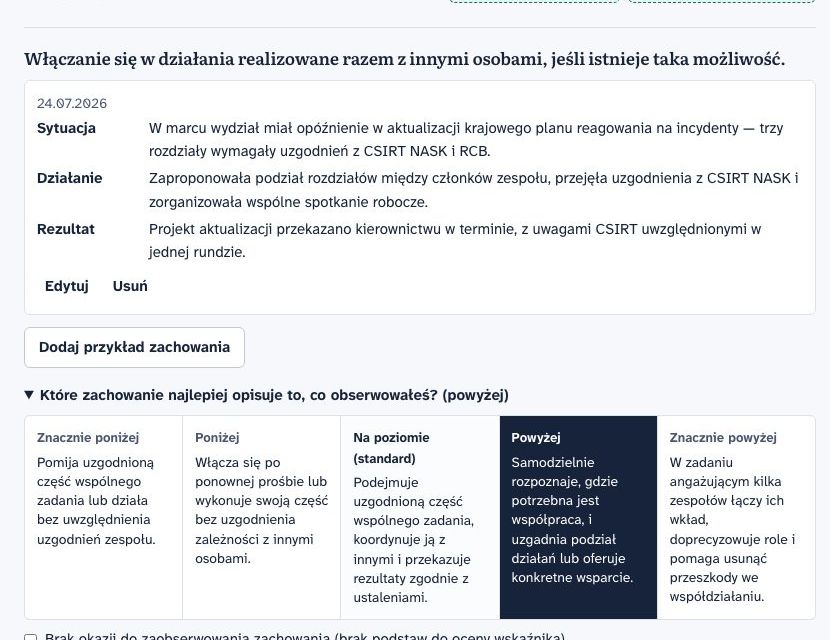
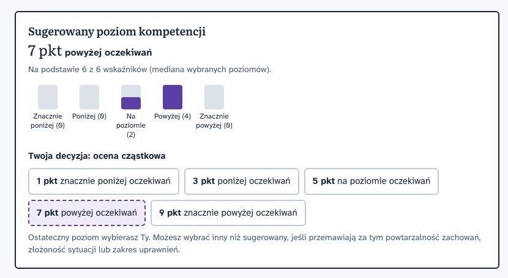
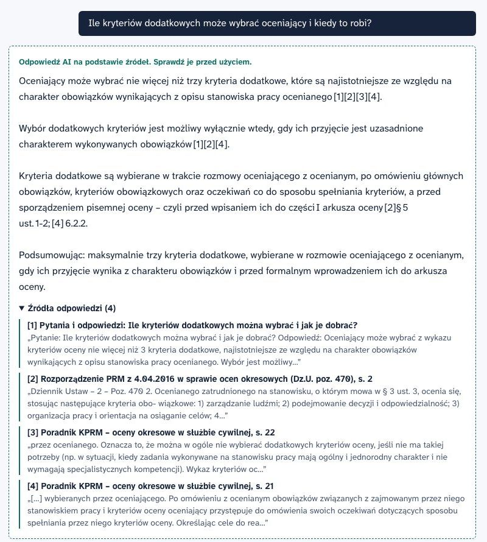
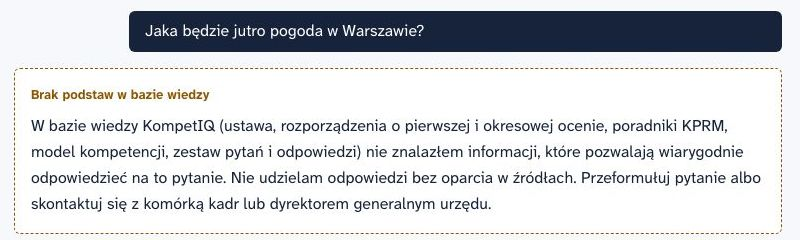
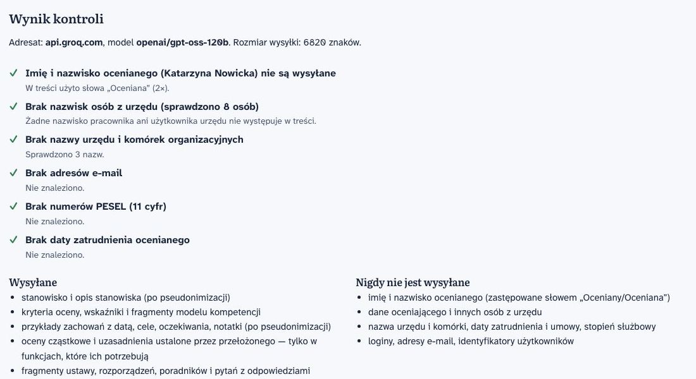
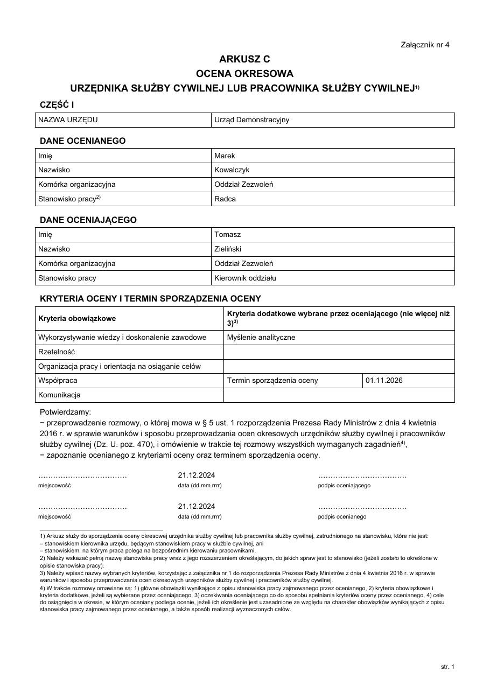
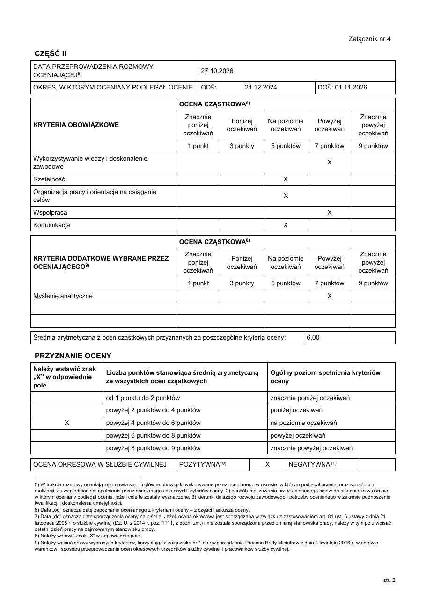
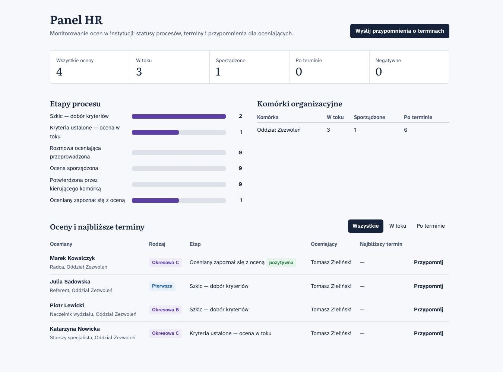

KompetIQ · Kompas Kompetencji
Prowadzi przełożonego przez pierwszą ocenę i ocenę okresową — od opisu stanowiska po arkusz gotowy do podpisu. Asystent AI porządkuje i podpowiada. Ocenę wystawia przełożony.
Koncepcja
Ocena opiera się na obserwowalnych zachowaniach. Każda decyzja o ocenie należy do człowieka — wymusza to kod, nie deklaracja.
Wybiera opisy zachowań, dokumentuje przykłady, przyznaje oceny cząstkowe i prowadzi rozmowę. Każdą sugestię AI przyjmuje, edytuje albo odrzuca.
Liczy sugerowany poziom, średnią i wynik pozytywny / negatywny wprost z przepisów. Pilnuje terminów i wymogów, generuje arkusze.
Wyjaśnia przepisy ze źródłem, analizuje przykłady, przygotowuje rozmowę. Nie proponuje ocen — jego odpowiedzi nie mają takich pól (test automatyczny).
Każda sugestia AI przechodzi tę samą drogę
Dwie ścieżki
rozporządzenie PRM z 23 lipca 2015 r.
rozporządzenie PRM z 4 kwietnia 2016 r.
Kreator sam dobiera kroki, skalę, terminy i formularz do rodzaju oceny.
Kreator

Trasa etapów Wymogi z paragrafemOcena zachowań

Przykład SDR Wybrany opis
Sugestia i Twoja decyzja14 kompetencji, 49 wskaźników, 5 poziomów z modelu kompetencji. AI może przeanalizować przykłady (braki, ryzyko błędów oceniania), ale nie ocenia.
Asystent AI

Cytowania [1]–[4] Fragmenty źródeł
Brak źródełOchrona danych

Automatyczna kontrolaDokumenty


Kadry i komunikacja

Statusy Przypomnij ↑Architektura i wdrożenie
Pełna dokumentacja
kompetiq.devcage.pl/o-projekcie
Aplikacja demo
kompetiq.devcage.pl